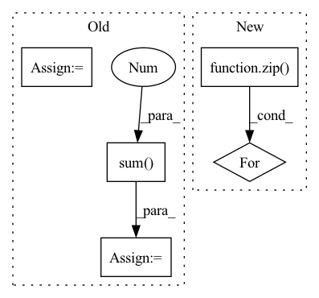

Pattern ID :1180

Before Change
for i in range(m):
for j in range(i + 1, m):
// [n, h, w] := ([n, h, w, c] * [n, h, w, c]).sum(-1)
interProduct = (features[i] * features[j]).sum(-1)
// feature from different group should be orthogonal
weakFeatureLoss.append(2 * self._auxLoss(interProduct, torch.zeros_like(interProduct)))
intraProduct = (features[i] * features[i]).sum(1)
// weakDiversityLoss.append(F.mse_loss(quantizeds[i], features[i].detach()))
weakFeatureLoss.append(self._auxLoss(intraProduct, torch.ones_like(intraProduct)))
// self._movingMean -= 0.9 * (self._movingMean - ssimLoss.mean())
After Change
weakCodebookLoss = list()
for raws, codes, codebooks, k, logits, spread in zip(allFeatures, allCodes, allCodebooks, self._k, allLogits, self._spreadLoss):
for raw, code, codebook, logit in zip(raws, codes, codebooks, logits):
// weakFeatureLoss.append(self._alignLoss(raw, F.one_hot(code, k).float(), codebook))
weakCodebookLoss.append(spread(codebook))
// weakCodebookLoss.append(self._l2Reg(raw, -1))
return dLoss, (sum(weakCodebookLoss), 0.0, 0.0), (restored, allTrues, allLogits)
In pattern: SUPERPATTERN
Frequency: 3
Non-data size: 5
Instances
Fragment ID: 4138975
Project Name: xiaosu-zhu/mcquic
Commit Name: 753fa7e4e7c9bf19e23ef12ea0062e240077eaf8
Time: 2021-11-28
Author: xiaosu.zhu@outlook.com
File Name: src/mcqc/models/whole.py
M Class Name: WholePQBig
N Class Name: WholePQBig
M Method Name: forward(3)
N Method Name: forward(3)
M Parent Class: nn.Module
N Parent Class: nn.Module
M File Name: src/mcqc/models/whole.py
N File Name: src/mcqc/models/whole.py
M Start Line: 44
M End Line: 66
N Start Line: 50
N End Line: 56
'>
Before Change
weakDiversityLoss = list()
weakFeatureLoss = list()
for features, quantizeds, codebooks in zip(allFeatures, allQuantizeds, allCodebooks):
for codebook in codebooks:
// [k, k] := [k, c] @ [c, k]
innerProduct = codebook @ codebook.T
// orthogonal regularization
weakCodebookLoss.append(self._auxLoss(innerProduct, torch.eye(innerProduct.shape[0], device=innerProduct.device, dtype=innerProduct.dtype)))
m = len(features)
for i in range(m):
for j in range(i + 1, m):
// [n, h, w] := ([n, h, w, c] * [n, h, w, c]).sum(-1)
interProduct = (features[i] * features[j]).sum(-1)
// feature from different group should be orthogonal
weakFeatureLoss.append(2 * self._auxLoss(interProduct, torch.zeros_like(interProduct)))
intraProduct = (features[i] * features[i]).sum(1)
// weakDiversityLoss.append(F.mse_loss(quantizeds[i], features[i].detach()))
weakFeatureLoss.append(self._auxLoss(intraProduct, torch.ones_like(intraProduct)))
// self._movingMean -= 0.9 * (self._movingMean - ssimLoss.mean())
After Change
weakCodebookLoss = list()
for raws, codes, codebooks, k, logits, spread in zip(allFeatures, allCodes, allCodebooks, self._k, allLogits, self._spreadLoss):
for raw, code, codebook, logit in zip(raws, codes, codebooks, logits):
// weakFeatureLoss.append(self._alignLoss(raw, F.one_hot(code, k).float(), codebook))
weakCodebookLoss.append(spread(codebook))
// weakCodebookLoss.append(self._l2Reg(raw, -1))
return dLoss, (sum(weakCodebookLoss), 0.0, 0.0), (restored, allTrues, allLogits)
'>
Fragment ID: 4138974
Project Name: xiaosu-zhu/mcquic
Commit Name: 753fa7e4e7c9bf19e23ef12ea0062e240077eaf8
Time: 2021-11-28
Author: xiaosu.zhu@outlook.com
File Name: src/mcqc/models/whole.py
M Class Name: WholePQBig
N Class Name: WholePQBig
M Method Name: forward(3)
N Method Name: forward(3)
M Parent Class: nn.Module
N Parent Class: nn.Module
M File Name: src/mcqc/models/whole.py
N File Name: src/mcqc/models/whole.py
M Start Line: 44
M End Line: 66
N Start Line: 50
N End Line: 56
'>
Before Change
distance_list.append(dist(x, y))
distance = torch.stack(distance_list, 0)
if self.average:
distance = distance.mean(0)
else:
distance = distance.sum(0)
return distance
After Change
stfts_y = self.multiscale_stft(y)
distance = 0.
for x, y in zip(stfts_x, stfts_y):
distance = distance + lin_distance(x, y) + log_distance(x, y)
@gin.register
'>
Fragment ID: 4138963
Project Name: caillonantoine/rave
Commit Name: c57a98c5145db1f44c6e5c540989494f696502ca
Time: 2022-11-05
Author: caillon@ircam.fr
File Name: rave/core.py
M Class Name: AudioDistance
N Class Name: AudioDistanceV1
M Method Name: forward(3)
N Method Name: forward(3)
M Parent Class: nn.Module
N Parent Class: nn.Module
M File Name: rave/core.py
N File Name: rave/core.py
M Start Line: 284
M End Line: 296
N Start Line: 276
N End Line: 284